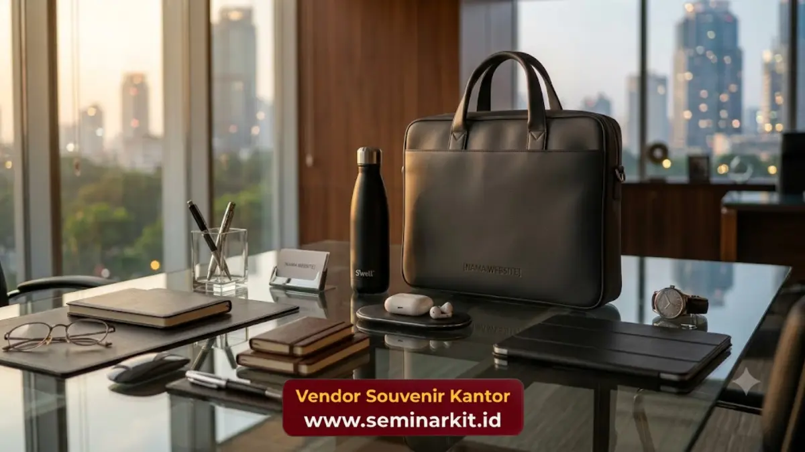

Souvenir bisnis untuk acara korporat adalah merchandise berlogo yang dibagikan kepada tamu atau peserta acara guna memperkuat kesan profesional dan mendukung branding perusahaan penyelenggara.
Souvenir bisnis untuk acara korporat berfungsi sebagai pelengkap penting dalam berbagai kegiatan resmi perusahaan, mulai dari seminar, peluncuran produk, hingga corporate gathering tahunan.
Kehadiran souvenir pada acara-acara ini tidak hanya menambah kesan berkelas, tetapi juga memberikan nilai tambah berupa kenang-kenangan yang mengingatkan tamu pada perusahaan penyelenggara setelah acara berakhir.
- Souvenir bisnis memperkuat kesan profesional dan kesiapan perusahaan dalam menyelenggarakan acara korporat.
- Jenis acara menentukan jenis souvenir yang paling sesuai untuk dibagikan kepada tamu atau peserta.
- Souvenir berkualitas menjadi kenang-kenangan yang memperpanjang eksposur merek pasca acara berlangsung.
Apa Itu Souvenir Bisnis untuk Acara Korporat?
Souvenir bisnis untuk acara korporat adalah produk merchandise yang dipersiapkan khusus untuk dibagikan kepada tamu, peserta, atau narasumber dalam sebuah kegiatan resmi perusahaan.
Souvenir ini biasanya dirancang selaras dengan tema acara sekaligus mencantumkan identitas visual perusahaan penyelenggara.
Kehadiran souvenir dalam acara korporat berperan sebagai bentuk apresiasi terhadap kehadiran tamu sekaligus media promosi yang halus namun efektif.
Berbeda dengan souvenir rutin, souvenir untuk acara korporat sering kali dibuat lebih spesifik, misalnya mencantumkan nama acara atau tanggal penyelenggaraan di samping logo perusahaan.
Acara Korporat Apa Saja yang Membutuhkan Souvenir Bisnis?
Acara korporat yang umumnya membutuhkan souvenir bisnis meliputi seminar dan workshop, peluncuran produk baru, corporate gathering tahunan, penandatanganan kerja sama, hingga pameran dagang atau exhibition.
Setiap jenis acara ini memiliki karakteristik audiens yang berbeda sehingga jenis souvenir yang dipilih pun perlu disesuaikan.
Pada seminar atau workshop, souvenir yang bersifat fungsional seperti notebook dan alat tulis umumnya lebih relevan karena mendukung aktivitas peserta selama acara berlangsung.
Sementara pada acara peluncuran produk, souvenir cenderung dirancang lebih eksklusif untuk mencerminkan citra produk yang baru diperkenalkan kepada publik.
Souvenir untuk Corporate Gathering dan Apresiasi Tahunan
Corporate gathering tahunan biasanya menghadirkan souvenir dengan nuansa perayaan, seperti hampers berisi produk pilihan atau merchandise eksklusif yang tidak dibagikan pada acara reguler lainnya.
Pendekatan ini memberikan kesan spesial sekaligus meningkatkan antusiasme peserta terhadap acara yang diselenggarakan perusahaan.
Bagaimana Souvenir Bisnis Meningkatkan Kesan Positif Acara Korporat?
Souvenir bisnis meningkatkan kesan positif acara korporat dengan menghadirkan pengalaman tambahan bagi tamu yang melampaui jalannya acara itu sendiri.
Pemberian souvenir yang tepat menunjukkan perhatian perusahaan terhadap kenyamanan dan apresiasi terhadap kehadiran tamu.
Kesan positif ini pada gilirannya memperkuat reputasi perusahaan sebagai penyelenggara acara yang profesional dan terorganisir dengan baik.
Tamu yang merasa dihargai cenderung memiliki persepsi yang lebih baik terhadap perusahaan, yang dapat berdampak positif pada hubungan bisnis di masa mendatang.
Bagaimana Menentukan Jumlah dan Anggaran Souvenir Acara Korporat?
Penentuan jumlah dan anggaran souvenir acara korporat idealnya disesuaikan dengan skala acara, jumlah tamu undangan, serta tujuan utama penyelenggaraan acara tersebut.
Acara berskala besar dengan ratusan tamu umumnya memerlukan souvenir dengan harga per unit yang lebih efisien namun tetap mempertahankan kualitas standar perusahaan.
Sebaliknya, acara dengan tamu terbatas seperti pertemuan eksekutif atau penandatanganan kerja sama strategis dapat mengalokasikan anggaran lebih besar per unit souvenir untuk menghadirkan produk yang lebih eksklusif dan berkesan mendalam bagi penerimanya.

Menyesuaikan Souvenir dengan Tema dan Identitas Acara
Selain anggaran, kesesuaian tema turut menentukan pemilihan souvenir acara korporat. Warna, desain kemasan, dan jenis produk sebaiknya selaras dengan tema besar acara agar souvenir terasa menyatu dengan keseluruhan pengalaman yang dihadirkan kepada tamu.
Apa Manfaat Jangka Panjang Souvenir bagi Perusahaan Penyelenggara?
Manfaat jangka panjang souvenir bisnis bagi perusahaan penyelenggara meliputi peningkatan brand recall pasca acara, penguatan hubungan dengan tamu undangan, serta terciptanya kesan profesional yang dapat memengaruhi keputusan kerja sama di kemudian hari.
Souvenir yang berkesan sering kali menjadi bahan pembicaraan positif yang memperluas eksposur merek secara organik.
Souvenir bisnis merupakan elemen penting yang tidak boleh diabaikan dalam perencanaan acara korporat, karena berperan langsung dalam membentuk kesan profesional dan memperkuat hubungan dengan tamu undangan.
Kesesuaian jenis souvenir dengan tema, anggaran, dan skala acara menjadi kunci keberhasilan strategi ini.

Banner promosi: klik gambar untuk langsung terhubung ke WhatsApp tim sales.